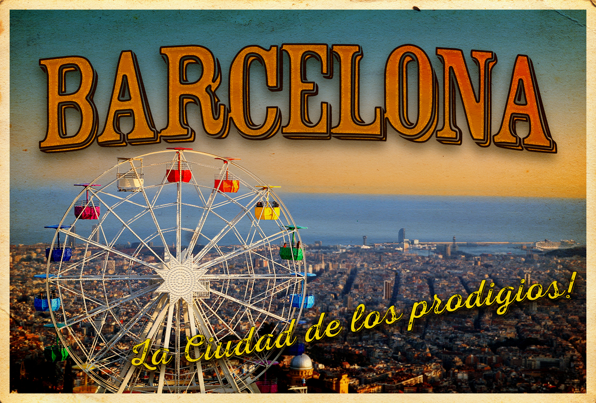
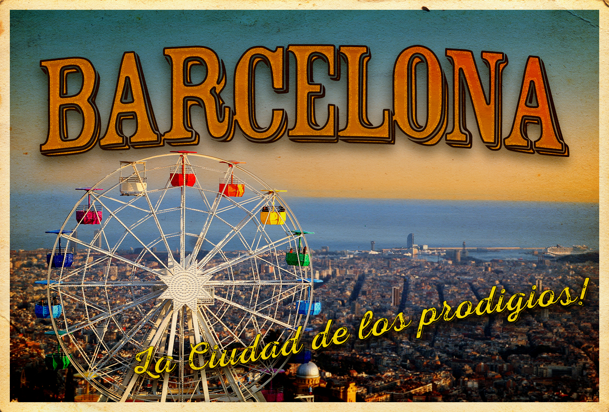

My name is Steven I’m a versatile graphic designer and photographer with an adaptable creative style that branches across media, themes, and styles. Inspired by artists in various fields, I blend minimalism and abstract elements to craft visuals that are uniquely my own.
See my Work